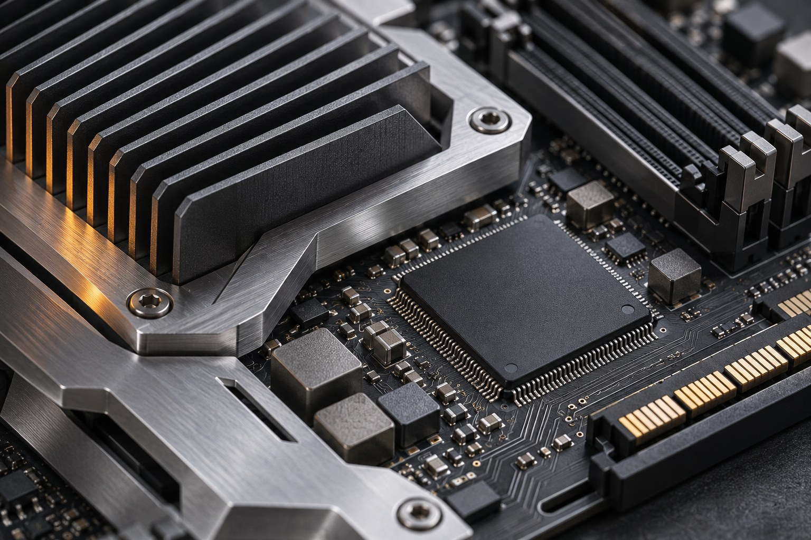

TECH BRIEF / 全球科技晨報
2026 年 11 月 6 日 · 8 則重點 · 約 6–8 分鐘閱讀
2026-11-06 正式版 · 更新於 10:17（Asia/Shanghai，UTC+8） · 逐篇核對來源，事實與編輯分析分列。
Today’s Global Tech Brief
AI走進日常工具，
硬體與修補能力決定落地
本期8則已核實新聞，聚焦11月5日公告及評估，延伸追蹤11月4日影像生成、資安研究與外接GPU新設計。硬體設備新聞清楚區分產品公布、供貨與實測。
AI工作流程修補時效模組化硬體研發評估

HARDWARE / AI · AI生成概念圖
今天最重要的 3 個趨勢
01 · AI Workflows
從搜尋到影像，AI整合成可直接使用的工作流程
AWS Web Answer封裝搜尋與引用答案，Images 2.6加快影像迭代，Edge重做內容入口。編輯判斷：效率提升仍需連同來源、編輯一致性與實際使用限制核對。
02 · Security and Evidence
能力進步更快，部署與外部評估必須跟上
OpenAI公開Linux漏洞研究，Microsoft討論修補曝險窗口，METR審視Anthropic研發加速判斷。編輯判斷：研究輸出、風險指標與已部署防護是不同證據。
03 · Hardware Choices
代理CPU與外接GPU，重新安排運算分工
NVIDIA討論Vera代理CPU效能，ASUS公布XG Station 3外接顯卡座。編輯判斷：可升級性值得追蹤，但供電、相容性與自家工作負載實測才決定價值。
Big Tech Tracker · 公司追蹤
數字為本期收錄篇數；0 表示本期未收錄，並非沒有重大新聞。
AI Radar · 本期主題分布
依本期文章分類計數，每篇只計一次，並非全市場熱度。
本期新聞
OpenAI · 影像生成★★★★☆
OpenAI於11月4日發布Images 2.6，支援ChatGPT、Codex與API，加入GIF生成及跨輪編輯一致性改善。
Images 2.6 加入GIF與更精細編輯，創作流程持續縮短
展開分析 ↓
已核對事實：官方稱生成速度較前版快50%；API提供Flare與Sunburst兩種選擇，另加入區域標註、SVG輸出與complexity控制。速度和品質是供應商自述，並非獨立比較。本則為72小時內延伸追蹤。
為何重要 · 編輯分析：對行銷、產品示意與介面素材，價值在於減少反覆重做。編輯判斷：團隊仍應保存原始素材、品牌規範與人工審稿；生成一致性改善不等於每次都精確。
閱讀原文 ↗OpenAI 官方 · 2026-11-04（延伸追蹤）
OpenAI · 資安研究★★★★☆
OpenAI於11月4日公開研究流程，稱10月一輪受控測試動態重現1,724項漏洞，產生948個本機提權驗證案例。
Linux漏洞研究：發現與修補之間，仍有人工審核關卡
展開分析 ↓
已核對事實：該輪API成本約121萬美元，流程包含候選修補程式，並由研究人員檢查及向維護者通報。不能把948個驗證案例寫成948項已合併上游或已部署修補。本則為72小時內延伸追蹤。
為何重要 · 編輯分析：漏洞發現速度上升，會把壓力移向分級、驗證與部署。編輯判斷：企業應衡量修補覆蓋和實際曝險時間，不能把研究產量直接換算成安全成效。
閱讀原文 ↗OpenAI 官方研究 · 2026-11-04（延伸追蹤）
Microsoft · Windows安全★★★★☆
Microsoft於11月5日說明AI輔助漏洞調查、驗證及修補流程，強調工程師仍負責決策與最終產出。
Microsoft重新檢視漏洞管理：修補發布後，部署速度成為重點
展開分析 ↓
已核對事實：公司稱10月Windows更新處理逾1,100項CVE；其8月企業樣本中，少於半數裝置在發布兩週後完成更新。這些是過去月份數據，並非今天新發現的漏洞。Hotpatch僅適用符合資格的環境，仍需週期性基線更新。
為何重要 · 編輯分析：更新已發布不等於端點已受保護。編輯判斷：IT應依曝險分批加快部署，連同相容性測試、覆蓋率和復原措施追蹤，不以單一CVE總數判斷安全高低。
閱讀原文 ↗Microsoft 官方 · 2026-11-05
METR · AI研發評估★★★★☆
METR於11月5日發布對Anthropic 8月風險報告的審查，認為7月15日時可能已跨越研發加速早期預警門檻。
METR質疑Anthropic研發加速門檻判斷的信心程度
展開分析 ↓
已核對事實：METR仍同意當時直接災難性風險較低，亦不認為當時模型能完全自動化AI研發；其爭議集中於加速幅度、因果歸因及公開表述的不確定性，不能簡化成已證實全面失控。
為何重要 · 編輯分析：評估指標本身也需接受外部檢驗。編輯判斷：採用AI研發工具時，應區分任務變快、整體能力進展和風險門檻，公開方法及誤差比單一倍數更有用。
AWS · AgentCore★★★★☆
AWS於11月5日宣布AgentCore Web Answer正式可用，代理可用一次呼叫取得依據當前網頁來源生成的引用答案。
AWS Web Answer正式推出，將搜尋與帶引用答案封裝成工具
展開分析 ↓
已核對事實：工具延伸自Web Search，提供網域包含／排除及發布日期篩選，以MCP接入AgentCore Gateway並透過IAM驗證。公告列明首發區域為美東維吉尼亞北部，按工具呼叫計費。
為何重要 · 編輯分析：團隊可減少自行串接搜尋、檢索與摘要的工程。編輯判斷：仍需驗證引用是否支持敘述、來源時效與地區可用性；附引用並不自動消除幻覺。
NVIDIA · CPU與代理★★★★☆
NVIDIA於11月5日公開Vera CPU在代理工作負載中的效能與每瓦容量比較，強調代理不只需要GPU推理。
Vera把代理的CPU執行成本帶到檯面，效能仍看測試條件
展開分析 ↓
已核對事實：官方於100MW資料中心比較情境中宣稱，對最快x86 CPU可提供1.6倍每瓦代理容量；對另一款高能效x86 CPU則宣稱代理速度2倍。兩者比較基準不同，不應拼接成同一測試結果，亦非獨立實測。
為何重要 · 編輯分析：代理會反覆呼叫工具、執行程式與查詢資料，CPU、記憶體和隔離環境都影響成本。編輯判斷：採購需用自家工作負載驗證吞吐、延遲與整體耗電，不能只比GPU數量。
閱讀原文 ↗NVIDIA 官方測試說明 · 2026-11-05
ASUS · 創新硬體★★★★☆
ASUS公開Thunderbolt 5外接顯卡擴充座ROG XG Station 3，採開放式設計，讓相容筆電接上桌面級顯卡與周邊。
ROG XG Station 3：把筆電顯示卡升級放到機身外
展開分析 ↓
已核對事實：官網頁首日期11月4日、內文署期11月3日，兩者如實保留。公布80Gbps雙向頻寬、最高140W筆電供電及BTF 2.5顯卡供電插槽；標準顯卡仍需供電線。公告未列售價與開賣日期，屬產品公布，非已出貨或獨立實測。
為何重要 · 編輯分析：模組化不只限於Framework：外接GPU把攜帶與桌面效能分開。編輯判斷：選購前要核對主機Thunderbolt／作業系統支援、顯卡尺寸與電源，以及實測頻寬損耗；不能預設所有USB-C筆電或Mac均可使用。
閱讀原文 ↗ASUS 官方 · 頁首2026-11-04／署期11-03（延伸追蹤）
Microsoft · 內容分發★★★★☆
Microsoft於11月5日推出Edge新分頁與Windows Discover資訊體驗，重新設計推薦並擴展Curated by Copilot。
Edge改版資訊入口，Copilot摘要連結回原始報導
展開分析 ↓
已核對事實：功能以多篇文章整理觀點並提供原始報導出處；首批於美國、加拿大、英國、澳洲及印度桌面入口推出。更多國家、手機及MSN.com屬後續計畫，不代表已全球上線。
為何重要 · 編輯分析：瀏覽器與作業系統入口正成為AI摘要的分發渠道。編輯判斷：媒體參與控制、來源歸屬與使用者選擇會影響內容生態，推薦品質仍需實際使用驗證。
閱讀原文 ↗Microsoft 官方 · 2026-11-05
本期沒有符合篩選條件的文章。可切回「全部公司」或「全部」。
在 iPhone 與 Mac 閱讀
iPhone：用 Safari 開啟此網址，點「分享」→「加入主畫面」。Mac：將此頁加入書籤。每次開啟皆讀取已發布的最新版本。